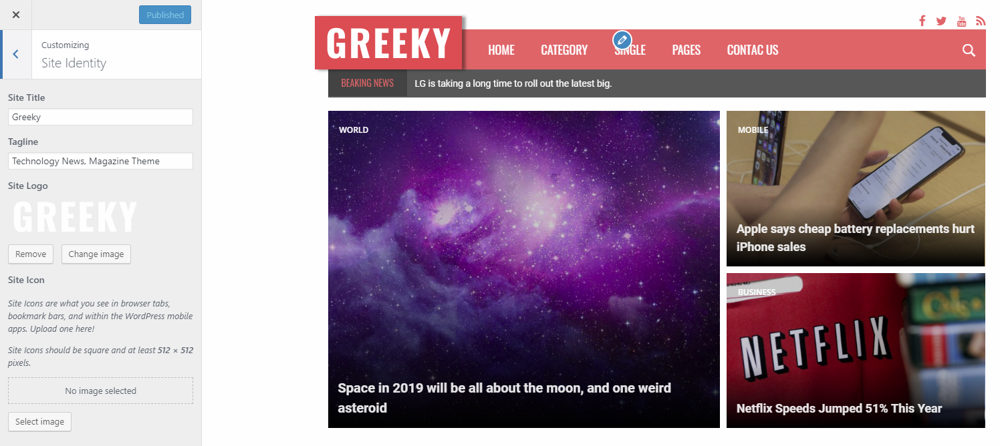
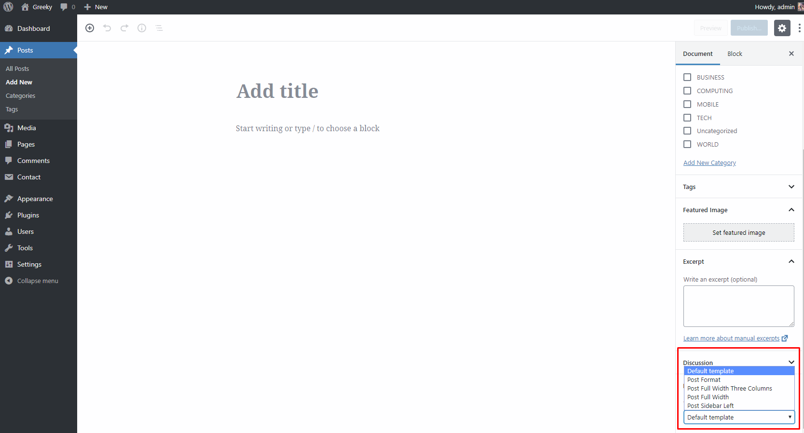
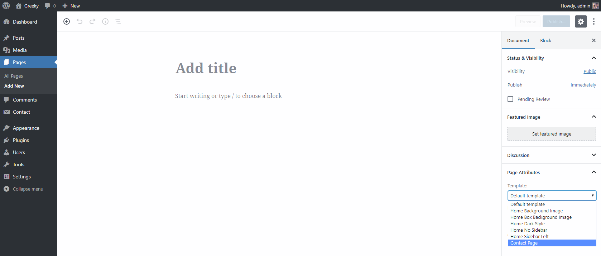
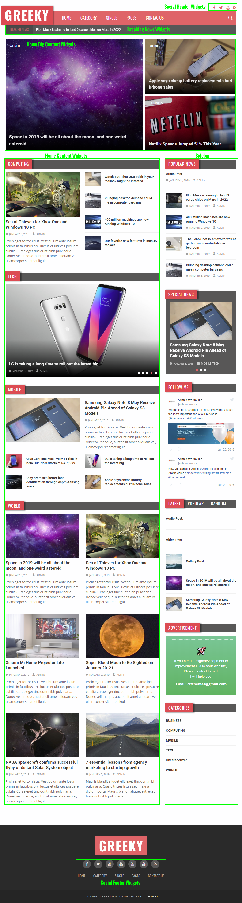
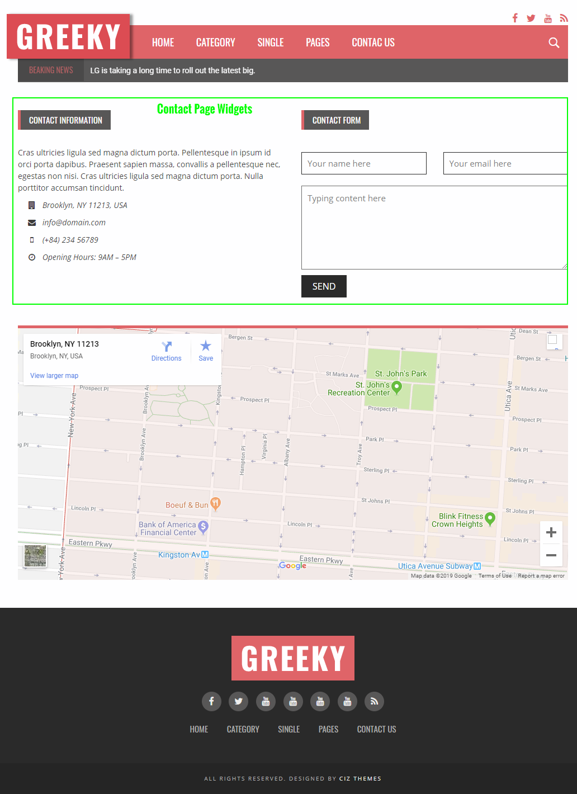

Thank you for purchasing our theme. If you have any questions that are beyond the scope of this help file, please sent email to congnd91@gmail.com We will get back to you within 12 hours and help you with any issue you might have. Thanks so much!
Installing Greeky Theme
Using WordPress Dashboard
Download full theme ZIP package and Extract it to normal folder.
Go to your WordPress dashboard and click on Appearance.
CLick on Add New Themes then click on Upload.
Browse for greeky.zip inside the extracted folder then click Open.
Click the Install Now.
After finishing instlation process click on Activate the theme.
Using FTP
Extract greeky.zip to normal folder.
Open WordPress instaltion directory.
Go to /wp-content/themes directory.
Upload greeky folder to that "themes" directory.
You will find greeky-child folder. It's a child theme you can edit and upload using FTP to themes directory.
Recommended Plugins
To install any plugin just go to Plugins > Add New. Type or paste plugin name and wait until it's appears then install and activate it. Please, read any plugin documentation before using it to know how to use it correctly.
Greeky theme comes with XML demo content file "demo-data.xml" you will find it inside theme package folder. To import it:
Go to Tools > Import.
Click on WordPress.
Install and activate WordPress Importer plugin.
Upload "demo-data.xml" and import it.
Updating Greeky Theme
Greeky theme may be updated periodically in order to add new features and fix bugs. You have two methods to update theme.
Updating Automatically
Envato have developed the Envato Toolkit Plugin for WordPress.
This plugin automatically alert you on your dashboard when a new version of the theme is available and you can update it automatically from your WordPress dashboard. Follow upcoming steps to install and use it.
Greeky theme powerful customiztion panel will help you to change options, logo, layout, typography and see change in live preview before saving. Options are arranged to help you understand and use it.

Here are the most options you will looking for:
Adding Logo
Go to Appearance > Customize.
Click on Settings: Header.
Add Logo.
Adding Favicon
Go to Appearance > Customize.
Click on Site Identity.
Add Site Icon.
Default Sidebar Position
Go to Appearance > Customize.
Click on Settings: General.
in Sidebar Position Choose Right, Left or No Sidebar
Home Page
Home Page Layout
Greeky has 6 home page layouts:
Default style
Dark style
Sidebar left
No sidebar
Box background
Dark background
To change home page layout:
Go to Pages
Select Template desire.
Categories
Greeky has 4 category page layouts:
Default style.
Grid mode
Grid full width
Grid large full width
Posts
Post Formats
Greeky theme has four post Formats ( Standard, Video, Audio, Gallery ).
Standard It will display Featured Image if you added it.
Video To embed Youtube, vimeo, Dailymotion or TED video.
Just copy video link from browser and paste it like this:
"https://www.youtube.com/watch?v=NgJHbvGd_q0"
Audio To embed SoundCloud or spotify audio.
Just copy audio link from browser and paste it like this:
"https://soundcloud.com/goodlifeproject/mark-nepo-1"
Gallery To insert slideshow gallery to post.
Featured Image
You must insert Featured Images for all posts even gallery posts.
Featured Image size must be ( 1000px width X 550px height ) or more.
Post Excerpt
Excerpt will only display when you add it.
To display Excerpt textarea in Post edit page.
Click on Screen Options then check Excerpt
Post Templates
Greeky has 4 posts layouts:
Default style
No sidebar
Sidebar left
Three columns

Pages
Page Templates
Greeky theme has 6 page templates.

Default template
Home Background Image
Home Box Background Image
Home Dark Style
Home No Sidebar
Home Sidebar Left
Contact Page
Featured Image
You can insert Featured Image to Page.
Featured Image size must be ( 1000px width X 550px height ) or more.
Sidebars
Sidebars & Widgets
Greeky theme has 7 widget areas:
Sidebar
Social Header Widgets
Breaking News Widgets
Home Big Content Widgets
Home Content Widgets
Social Footer Widgets
Contact Page Widgets
To add Widgets go to Appearance > Widgets.


Greeky Custom Widgets
Greeky theme has 12 Custom widget. they are prefixed by theme name "Greeky - ".